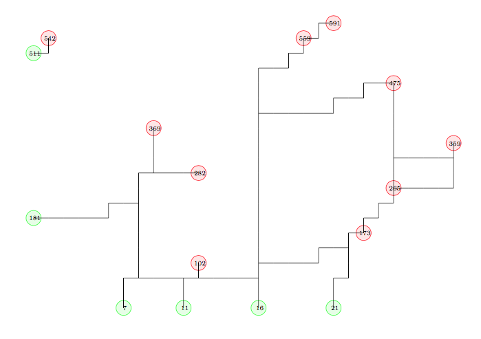

Case Study:
Post Disaster Debris Removal
Sensitivity Analysis
Students may work in groups of up to three people. You may consult your textbooks, your notes, online information, the TA, and me. You may not solicit help from other sources.
Due: Friday, November 17. (30 points)
The solution found in Part 1 depends on the precise values of various parameters. Use sensitivity analysis to answer the following questions. Answer them without re-solving the linear program. Include printouts of relevant parts of your AMPL output. Assume that each part is independent of the others. Procedures for obtaining shadow prices and other relevant information are given below.
All of these questions work with the LP relaxation. When you are asked for marginal changes in values, you need to refer to the LP relaxation, even if fractional values of the parameters might not have a physical meaning.
If you prefer to use them, my model and run file are available on the course website. The solution to the LP relaxation has value 166.04. If your model returns a different value, you need to either modify your model so it does give this value, or use my model. The output obtained by my model is available online. The optimal solution uses the edges indicated in Figure 1.

Notes: (1) You may want to solve a modified problem to check your answer, or to try to determine where to look for sensitivity information. That is OK, but I don’t want to see those results! You must give me the information using only sensitivity analysis. (2) Questions 4 and 5 require more than just displaying reduced costs and/or dual variables, because they involve changes in the entries in the constraint matrix, so you need to make careful arguments to get the answers from the dual variables and/or reduced costs. (3) AMPL might give a dual variable or reduced cost of the opposite sign from what you expect. That’s OK, you can just use the sign you’d expect.
display fabcap;
To find the slack in the constraint, type
display fabcap.slack;
display SELL.rc;
ampl: reset;
ampl: model chips.mod;
ampl: data chips.dat;
ampl: reset data;
ampl: data chips.dat;
(OS) ampl
ampl: model sample/steel.mod;
ampl: data sample/steel.dat;
ampl: solve;
MINOS 5.4: optimal solution found.
2 iterations, objective 192000
ampl: let rate["bands"]:=250;
ampl: solve;
MINOS 5.4: optimal solution found.
1 iterations, objective 217200
ampl: option solver cplex;
ampl: option cplex_options ’sensitivity’;
ampl: option omit_zero_rows 1;
ampl: option display_1col 10000;
(See page 249 of the AMPL text.)
All the constraints and their shadow prices can be displayed simultaneously by using the command
(Again, see page 249 of the AMPL text.)
These commands can be used with the other suffices available when using the cplex sensitivity option.
where you will also find more information about AMPL.
| John Mitchell |
| Amos Eaton 325 |
| x6915. |
| mitchj at rpi dot edu |
| Office hours: Tuesdays 12-2pm, Wednesdays 11am–1pm. |